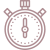

Design Role
UX Design
Visual Design
Frontend

Design Deliverables
User Research
Competitive Analysis
User Stories
Wireframes
Visual Design
Usability Testing
High Fidelity Mockups
Basic Frontend Development

Duration & Tools
3 Weeks
Figma
Marvel
Adobe Photoshop
Github
Atom
Part I: Overview
 What is Bus App?
What is Bus App?
With so many bus stations, different routes and times being added or changed, it’s hard to keep track of which bus you should take and figure out the fastest way to basically anywhere. The app’s main priority is to provide as much information in a simple and intuitive platform.
 The Problem
The Problem
An increasing number of bus routes have been recently added and many of those routes stop at the same bus stop. Commuters want to know what the next arriving bus is and how long it’d take them to get to the bus stop since simply rushing to the stop when they see a bus no longer works since it may not even be the bus that they are expecting.
Most complaints received is for the bus stop at Washington and State which currently have 7 bus lines serving the stop.
 The Solution
The Solution
To design a mobile app that displays important information for the Washington & State bus stop which includes the following:
- Which bus routes service the stop
- How many minutes until the bus arrives
- How frequent each bus is
Part II: Research & Discovery
User Survey
A user survey was conducted to understand the needs of commuters as well as discover their motivations and frustrations with current apps they were using. The following questions were answered from the survey that was held:
- How many times did survey participants take the bus?
- What devices do they use when looking up bus information?
- What was their go-to app when planning their commute?
- Which features do they like or dislike about their current app?
- What kind of information/feature did they wish their current app offered?
Top 5 most important features:
- Access to timetable maps & schedules
- Ability to track the location of buses in real time
- Ability to view list of stops near you
- Real time updates on traffic & other issues
- Directions to the nearest bus stops
Frustrations with current apps & commuting:
- Shows inaccurate time estimates for when buses would arrive
- Inaccurate bus schedules are shown
- Bus delays are incredibly frustrating when commuting
- Buses are always crowded
- Routes are very confusing
After conducting the user survey, I was able to confirm that a lot of my assumptions were correct but I hadn’t realized that directions to the nearest bus stops and the ability to track the location of buses in real time was considered as an important feature for bus riders. The results and feedback received in the survey gave me more insight to confidently move forward with bringing Bus App to life.
 Competitive Analysis
Competitive Analysis
My biggest takeaway from conducting the user survey was seeing that bus riders weren’t absolutely happy with their current public transit app since all their travel needs weren’t being met. I looked into major players of the public transit market to find out how Bus App could enter the market.
It was important to look into what current competitors in the healthy food delivery realm were doing in order to build a product that would be different from what is currently offered.
Google Maps was the leading app that my user participants used for planning their trips and it made complete sense. They offered public transit data that offered directions both in and out of metropolitan areas and gave users the ability to download maps for offline use. However, they lacked in providing real time public transit information and walking navigation directions can sometimes be inaccurate.
Moovit on the other hand positions themselves as “the Wikipedia of Transit.” It’s a community-driven app hence, giving its users access to real time transit data. However, Moovit’s limited for those who need driving directions or public transit information in suburbs where transit options are limited. Also, the app doesn’t allow their users to manually update their route while in progress.
For Bus App to successfully gain traction as a new competitor in the market, it’s advisable to include features and strengths of major players that’s beneficial to the user but also incorporate what riders are looking for: real time updates and alerts.
In addition to this, truly understanding how an individual user plans their trips and which routes they frequent will make the app a regular go-to rather than something they use when they remember or need it. Keeping tabs on bus stops the user frequently goes to will help with offering better solutions for the user.
Last but not the least, providing accurate transit data will benefit users. By removing limitations and barriers that other apps have will help attract and add to Bus App’ customer base.
Part III: Information Architecture
 User Stories
User Stories
Creating user stories was now an easier feat since I got to know who my market competitors and potential users were. This step was done so that I could idenitfy and demonstrate priority features for the app as well as avoid scope creep.
 Prototype
Prototype
With my user stories selected and prioritized, I turned to pen and paper to quickly sketch a 3-screen paper prototype so that I could map out which features I wanted in each screen and how the layout should look.
After creating my sketches, I created a clickable prototype using Marvel so that I could test my design decisions and receive feedback from test participants.
Usability Testing
Test participants were able to provide me with incredibly helpful feedback. Upon first glance, participants found the app easy to figure out and were able to assume that it was a map app for buses and that it could help with getting travel directions. It was also mentioned that the interface was simple and straightforward.
Despite ease of use and being intuitive, test participants had also pointed out design flaws that needed to be addressed:
1. Heart Icon and other nav bar icons: Testers were confused with the heart icon which was placed so that users could “like” a route. In addition to this, they felt that all icons should be labeled since it would help users gain familiarity of where each feature is located.
2. Exit Button: All testers had commented that the position of the exit button in the last screen threw them off since it was inconsistent from the first two screens they saw. In addition to placement, they also suggested making it bigger so that it was more visible.
3. Colors on the sketches: Testers were confused with what the colors in the sketches meant. I later on realized that I shouldn’t have used any color on my paper prototype so that they wouldn’t feel distracted or lose focus on the goal for testing.
Part IV: Visual Design
High-fidelity Mockups
Keeping in mind all the feedback I received on my sketches, I proceeded to creating a high fidelity mockup for the bus stop screen.
1st Iteration
My initial design was... let’s just say it was an “okay” try. I had completely ignored Apple Guidelines and made a bunch of rookie mistakes. I was still in the “as long as it looks cute” designer phase rather than focused on usability. Design flaws that needed to be corrected in this version were:
- I needed to add a title bar to the screen which indicated the location of the bus rider
- Search field needed to be moved up top per Apple Guidelines and user familiarity
- Contrast between nav bar icons and background didn’t meet accessibility guidelines.
- An arrow needed to be added to the end of bus line information to indicate that there’s more information available if tapped on.
2nd Iteration
The second version was better since I added the title bar and search field on the top part of the screen and an arrow after bus information to avoid any user confusion. In addition to this, the contrast issue in the nav bar was addressed by using a darker shade as a background. I also introduced a new color to the active icon to show the user that they were on that current page within Bus App. However, I still had a few more issues that I needed to address.
Design flaws that needed to be corrected in this version were:
- Font size used was incredibly small and didn’t meet accessibility guidelines
- Icons in the map were too small and not readable. Again, another accessibility issue
Final Version
My final version had addressed all accessibility issues in terms of readability and color. This version was a solution to the current problem of riders because of the following reasons:
- Users are able to easily view the location of the next arriving bus that’s within their vicinity on their screen. Bus locations are also properly labeled with their line number so users are never confused as to which direction their bus is coming from
- Hierarchy is applied to easily see which bus line arrives in a set amount of time. Green reflects that a bus is arriving in under 5 minutes, Yellow are for those arriving in less than 10 minutes and buses arriving in more than 10 minutes are in red.
- Users have access to seeing all lines arriving at the bus stop of their choice after selecting the bus stop nearest to them (or of their choice). Directions would also appear along with how long it would take for the user to walk to the bus stop.
For added ease of navigation and use, a navigation bar below also allows the user to access the map view (bus stop display screen), save trips they frequently take, view previous trips, plan future trips and explore what’s around their current location.
Part V: Frontend
Building a Responsive Solution
Once I was 100% happy with my visual design, I utilized my HTML and CSS skills to build the bus routes screen for Bus App and deployed the project to Github.
Part VI: Wrapping It All Up!
 What I Learned
What I Learned
This was my first UX project and although it was small and had one specific use, I learned that no project is too small to truly understand the needs of potential users and go through the entire UX process.
Accessibility was also my biggest lesson here. After creating different versions, I learned that sizing and color is incredibly important to creating a design that feels inclusive for all types of users.
I built a relationship with Apple Guidelines and learned that referring to it wouldn’t just help improve my design but also make coding the solution 10 times easier. As a new designer, it’s tempting to stray from the norm. However, I realized that Apple Guidelines (or any other guidelines) exist for a reason. It makes my designs familiar to users and consistency is key to creating something that doesn’t make my users have to think.
 If I Had More Time...
If I had more time, I’d conduct usability testing of the final prototype and tweak accordingly. I’d also develop an Android design and prototype to widen Bus App's user base.
I would’ve also loved to create a brand guideline for Bus App and more pages to make the prototype more engaging and realistic.


Let's talk!
Let's chat about how we can create stellar user experiences, or anything and everything about UX over a cup of coffee. ☕